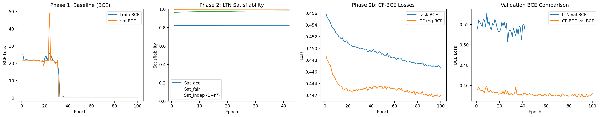
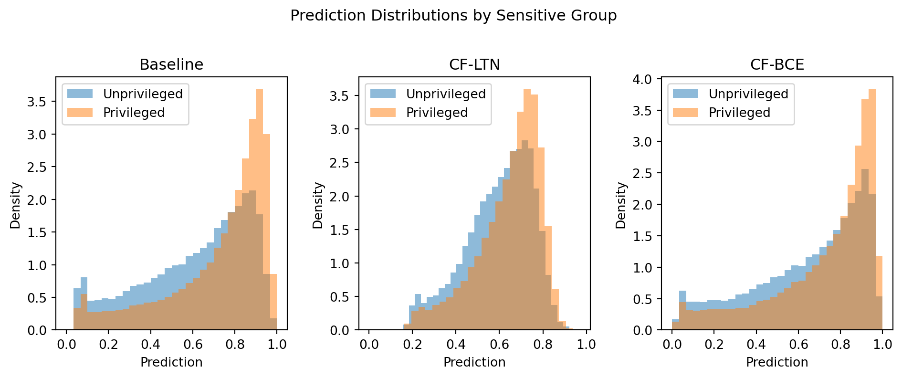

cfg = {
"data": {
"dataset_id": "folktables_acspubliccoverage",
"test_size": 0.2,
"val_size": 0.2,
},
"model": {
"hidden_layer_sizes": [256, 128, 64],
},
"train": {
"batch_size": 512,
"baseline_epochs": 100,
"ltn_epochs": 100,
"lr": 1e-3,
"weight_decay": 1e-5,
"patience": 15,
},
"ltn": {
# Relative weight of each axiom's unsatisfiability in the loss.
"w_accuracy": 1.0,
"w_fairness": 1.0,
"w_independence": 0.0,
# pMean exponent for the Forall quantifier (higher p = stricter on violations).
"p": 2,
},
"bce_cf": {
# Weight of the counterfactual consistency regularizer relative to task BCE.
"w_reg": 1.0,
},
}Neurosymbolic Architectures for Algorithmic Fairness: An Illustration of Counterfactually Fair Logic Tensor Networks
[Pre-Print] [GitHub Repository]
Introduction
This notebook trains a counterfactually fair classifier using Logic Tensor Networks (LTN) on the ACSPublicCoverage dataset from the FairGround benchmark collection. The approach follows a Logic Tensor Network approach to counterfactual fairness (Heilmann et al. 2025): counterfactual fairness is encoded as a first-order logic axiom and enforced during training via fuzzy-logic-based satisfiability maximization.
Setup
Configuration
Data
We use the ACSPublicCoverage dataset (Ding et al. 2021) from the folktables collection in the FairGround corpus (Simson et al. 2025). The data is obtained from the American Community Survey, which is conducted annually and includes data from millions of American households laying a foundation for critical policy decisions and social science research.
Loading and Transforming
dataset = FairDataset.from_id(cfg["data"]["dataset_id"])
df = dataset.load()
df, transform_info = dataset.transform(df)
target_col = dataset.get_target_column()
feature_cols = list(dataset.get_feature_columns(df))
sensitive_cols = transform_info.sensitive_columns
print(f"Dataset shape : {df.shape}")
print(f"Target column : {target_col}")
print(f"Sensitive columns: {sensitive_cols}")
print(f"Number of features (incl. sensitive): {len(feature_cols)}")
print(f"\nClass distribution:")
print(df[target_col].value_counts(normalize=True).rename("share").round(3).to_string())[23:24:41] INFO Loading cached dataset from cache/datasets/folktables_acspubliccoverage.parquet dataset.py:250
Dataset shape : (1138289, 110)
Target column : PUBCOV
Sensitive columns: ['RAC1P']
Number of features (incl. sensitive): 109
Class distribution:
PUBCOV
1 0.703
0 0.297Exploration
The classification task is to Predict whether a low-income individual, not eligible for Medicare, has coverage from public health insurance. While there are multiple sensitive attributes like sex, age, and marital status, we use race to differ between a privileged - (77.3%) and a unprivileged minority group (22.7%). The privileged group contains all individuals categorized as “white” or “asian”, since their base rates are above average. All other groups are considered unprivileged. The dataset has a total positive outcome rate of 0.7027, which is little lower for the minority group (0.613) and a little higher for the majority group (0.729).
The sensitive RAC1P feature has nine possible values, which are binarized for the simplicity of this illustration: 0. White alone 1. Black or African American alone 2. American Indian alone 3. Alaska Native alone 4. American Indian and Alaska Native tribes specified; or American Indian or Alaska Native, not specified and no other races 5. Asian alone 6. Native Hawaiian and Other Pacific Islander alone 7. Some Other Race alone 8. Two or More Races
for col in sensitive_cols:
print(f"\n{col} distribution:")
print(df[col].value_counts(normalize=True).rename("share").round(3).to_string())
print(f"\nOverall outcome rate by sensitive group:")
for col in sensitive_cols:
rates = df.groupby(col)[target_col].mean().round(3)
print(f" {col}:\n{rates.to_string()}")
for col in sensitive_cols:
privileged = df[col].isin(["0", "5"]) # White alone and Asian alone as privileged groups
df[col] = (privileged).astype(int) # Binarize: 1 for privileged, 0 for unprivileged
for col in sensitive_cols:
print(f"\nBinarized {col} distribution:")
print(df[col].value_counts(normalize=True).rename("share").round(3).to_string())
print(f"\nOverall outcome rate by binarized sensitive group:")
for col in sensitive_cols:
rates = df.groupby(col)[target_col].mean().round(3)
print(f" {col}:\n{rates.to_string()}")
RAC1P distribution:
RAC1P
0 0.715
1 0.124
5 0.057
7 0.054
8 0.033
2 0.011
6 0.002
4 0.002
3 0.001
Overall outcome rate by sensitive group:[23:24:44] WARNING /var/folders/zt/m0h96y152cj6tzzphxg3v9hr0000gn/T/ipykernel_36134/4096668893.py: warnings.py:109 7: FutureWarning: The default of observed=False is deprecated and will be changed to True in a future version of pandas. Pass observed=False to retain current behavior or observed=True to adopt the future default and silence this warning. rates = df.groupby(col)[target_col].mean().round(3)
RAC1P:
RAC1P
0 0.726
1 0.590
2 0.571
3 0.475
4 0.583
5 0.768
6 0.679
7 0.644
8 0.665
Binarized RAC1P distribution:
RAC1P
1 0.773
0 0.227
Overall outcome rate by binarized sensitive group:
RAC1P:
RAC1P
0 0.613
1 0.729Train / Val / Test Split
train_df, val_df, test_df = dataset.train_test_val_split(
df,
test_size=cfg["data"]["test_size"],
val_size=cfg["data"]["val_size"],
)
print(f"Train: {len(train_df):,} | Val: {len(val_df):,} | Test: {len(test_df):,}")INFO Stratifying split by columns: ['PUBCOV', 'RAC1P'] dataset.py:767
Train: 682,973 | Val: 227,658 | Test: 227,658Counterfactual Generation
For each sample we generate a counterfactual by flipping the sensitive attribute. For binary attributes (0/1) the flip is exact; for \(k\)-valued attributes we cycle to the next value modulo \(k\).
def generate_naive_counterfactuals(df: pd.DataFrame, sensitive_cols: list) -> pd.DataFrame:
"""Return a copy of df with all sensitive columns flipped/rotated."""
df_cf = df.copy()
for col in sensitive_cols:
unique_vals = sorted(df[col].unique())
n = len(unique_vals)
val_map = {v: unique_vals[(i + 1) % n] for i, v in enumerate(unique_vals)}
df_cf[col] = df[col].map(val_map)
return df_cf
def generate_naive_rac1p_counterfactuals(df: pd.DataFrame, sensitive_col: str) -> pd.DataFrame:
"""Specialized multiclass counterfactual generation for RAC1P: flip "White alone" and "Asian alone" to random other categories, else flip to white.
"""
df_cf = df.copy()
unprivileged = df_cf[sensitive_col].isin(["0", "5"])
df_cf[sensitive_col] = np.random.choice([1,2,3,4,6,7,8], len(df_cf), replace=True)
df_cf.loc[unprivileged, sensitive_col] = 0
return df_cf
train_cf_df = generate_naive_counterfactuals(train_df, sensitive_cols)
test_cf_df = generate_naive_counterfactuals(test_df, sensitive_cols)
# Sanity check: sensitive distribution should be swapped
for col in sensitive_cols:
orig = dict(train_df[col].value_counts())
flip = dict(train_cf_df[col].value_counts())
print(f"{col} original: {orig} → counterfactual: {flip}")RAC1P original: {1: 527748, 0: 155225} → counterfactual: {0: 527748, 1: 155225}Dataset Classes and DataLoaders
def df_to_arrays(df, feature_cols, sensitive_cols, target_col):
X = df[feature_cols].values.astype(np.float32)
# Use first sensitive column as a scalar group indicator for metrics
A = (df[sensitive_cols[0]].values.astype(np.int64)
if sensitive_cols else np.zeros(len(df), dtype=np.int64))
y = df[target_col].values.astype(np.float32)
return X, A, y
class TabularDataset(TorchDataset):
def __init__(self, X, A, y):
self.X = torch.tensor(X)
self.A = torch.tensor(A)
self.y = torch.tensor(y)
def __len__(self):
return len(self.y)
def __getitem__(self, idx):
return self.X[idx], self.A[idx], self.y[idx]
class CFPairDataset(TorchDataset):
"""Dataset of (factual, counterfactual) pairs for LTN training."""
def __init__(self, X, A, y, X_cf):
self.X = torch.tensor(X)
self.A = torch.tensor(A)
self.y = torch.tensor(y)
self.X_cf = torch.tensor(X_cf)
def __len__(self):
return len(self.y)
def __getitem__(self, idx):
return self.X[idx], self.A[idx], self.y[idx], self.X_cf[idx]
X_train, A_train, y_train = df_to_arrays(train_df, feature_cols, sensitive_cols, target_col)
X_val, A_val, y_val = df_to_arrays(val_df, feature_cols, sensitive_cols, target_col)
X_test, A_test, y_test = df_to_arrays(test_df, feature_cols, sensitive_cols, target_col)
X_train_cf, _, _ = df_to_arrays(train_cf_df, feature_cols, sensitive_cols, target_col)
X_test_cf, _, _ = df_to_arrays(test_cf_df, feature_cols, sensitive_cols, target_col)
bs = cfg["train"]["batch_size"]
train_loader = DataLoader(TabularDataset(X_train, A_train, y_train), batch_size=bs, shuffle=True)
train_cf_loader = DataLoader(CFPairDataset(X_train, A_train, y_train, X_train_cf), batch_size=bs, shuffle=True)
val_loader = DataLoader(TabularDataset(X_val, A_val, y_val), batch_size=bs)
test_loader = DataLoader(TabularDataset(X_test, A_test, y_test), batch_size=bs)
input_dim = X_train.shape[1]
print(f"Input dimension : {input_dim}")
print(f"Train pairs : {len(X_train):,}")Input dimension : 109
Train pairs : 682,973Procedure
Model Architecture
Two validly examine the neurosymbolic properties of the LTN framework, we compare it to a cross-entropy based approach with the same objective. The baseline model for this illustration is an MLP with three hidden layers of widths 256, 128 and 64. We used ELU activations for hidden layers and a sigmoid for the output, since these are the ones recommended for Logic Tensor Networks (Serafini and Garcez 2016). We used a batch size of 512, trained the MLP for 100 epochs with the AdamW optimizer, a learning rate of 0.001, weight decay of 0.00001, and a binary cross-entropy loss function as objective. We did not engage in further hyperparameter tuning.
class MLP(nn.Module):
def __init__(self, input_dim, hidden_layer_sizes=(256, 128, 64)):
super().__init__()
layers: list[nn.Module] = []
in_dim = input_dim
for h in hidden_layer_sizes:
layers += [nn.Linear(in_dim, h), nn.ELU()]
in_dim = h
layers += [nn.Linear(in_dim, 1), nn.Sigmoid()]
self.net = nn.Sequential(*layers)
def forward(self, x: torch.Tensor) -> torch.Tensor:
return self.net(x).squeeze(-1)LTN Axioms
Afterwards, we finetune this model using two different loss functions, the first one being LTN-like formula \(\mathcal{L}_\text{CF-LTN}\), and the second one being a cross-entropy based counterpart \(\mathcal{L}_\text{CF-BCE}\). We left the regularization weight \(\lambda\) at 1.0 for both settings.
\[ \mathcal{L}_\text{CF-BCE} = \text{BCE}(y, \textbf{P}(x))\ +\ \lambda \text{BCE}(\textbf{P}(\text{cf}(x)),\textbf{P}(x)) \]
\[ \mathcal{L}_\text{CF-LTN} = (1 - \text{Sat}_\text{acc}) + \lambda(1 - \text{Sat}_\text{cf}) \]
\[ \text{Sat}_\text{acc} := (\forall x \in X: \textbf{P}(x) = \text{y}(x)) \]
\[ \text{Sat}_\text{cf} := (\forall x \in X: \textbf{P}(x) = \textbf{P}(\text{cf}(x))) \]
In the differentiable FOL axioms, we use a Gaussian similarity function to denote the a real truth value of equality and p-mean error aggregation (pME) with \(p = 2\) as \(\forall\)-quantifier. With \(p = 2\), pME essentially calculates the standard deviation of a term \(t\) from the truth (\(\top := 1\)) and subtracts it from the truth.
\[ a = b := \exp{-(a-b)^2} \]
\[ \forall x \in X: t := \text{pME}(t_1, t_2, ..., t_{|X|}) = 1 - (\frac{1}{|X|} \sum_{i=0}^{|X|} (1-t_i)^p)^{\frac{1}{p}} \]
For both illustrated loss functions, we use a very simple counterfactual function cf\((x)\), which merely flips the sensitive attribute.
p = cfg["ltn"]["p"]
# pMean-based Forall: 1 - (mean((1 - x)^p))^(1/p) is close to 1 when all x are close to 1, and drops towards 0 if any x is low. Higher p means more sensitive to low values.
Forall = lambda a: 1 - torch.pow(torch.mean(torch.pow(1 - a, p)), 1/p)
# pMean-based Exists: (mean(a^p))^(1/p) is close to 0 when all a are close to 0, and rises towards 1 if any a is high. Higher p means more sensitive to high values.
Exists = lambda a: torch.pow(torch.mean(torch.pow(a, p)), 1/p)
# Standard negation
Not = lambda a: 1 - a
# Product t-norm for conjunction: smooth, fully differentiable, zero-gradient only when one term is zero.
And = lambda a, b: a * b
# Probabilistic sum for disjunction: 1 - (1 - a) * (1 - b) is 1 when either a or b is 1, and drops towards 0 when both are close to 0.
Or = lambda a, b: 1 - (1 - a) * (1 - b)
# Reichenbach implication: 1 - a * (1 - b) is 1 when a=0 (vacuously true) or b=1 (consequent true), and drops towards 0 when a=1 and b=0 (antecedent true but consequent false).
Implies = lambda a, b: 1 - a * (1 - b)
# Gaussian similarity:
Equal = lambda a, b: torch.exp(-torch.square(a - b))
def axiom_accuracy(y_pred: torch.Tensor, y_true: torch.Tensor) -> torch.Tensor:
"""
Sat_acc = Forall_x [ Equal(f(x), y(x)) ]
Measures how well the model's continuous output matches the binary label.
Uses Gaussian similarity so Equal(a,b)=1 iff a=b, ∈ [0,1] otherwise.
"""
return Forall(Equal(y_pred, y_true))
def axiom_cf_fairness(y_pred: torch.Tensor, y_pred_cf: torch.Tensor) -> torch.Tensor:
"""
Sat_fair = Forall_{x,x_cf} [ Equal(f(x), f(x_cf)) ]
Counterfactual fairness: the model's output must not change when
the sensitive attribute is flipped to its counterfactual value.
"""
return Forall(Equal(y_pred, y_pred_cf))
def axiom_independence(y_pred: torch.Tensor, a: torch.Tensor) -> torch.Tensor:
"""
Sat_indep = 1 - η²(y_pred, a)
η² (eta squared) = SS_between / SS_total measures the proportion of
variance in predictions explained by group membership. It is 0 when
group means are identical (full independence) and 1 when all variance
is between groups (full dependence).
Sat_indep is therefore 1 when predictions are independent of the sensitive attribute and 0 when they are fully determined by it. Unlike the per-sample axioms, this is a batch-level statistic and is not wrapped
in Forall — it is a scalar in [0, 1] and plugs directly into the loss.
"""
groups = torch.unique(a)
grand_mean = y_pred.mean()
ss_total = ((y_pred - grand_mean) ** 2).sum()
if ss_total < 1e-8:
return torch.tensor(1.0, device=y_pred.device)
ss_between = torch.stack([
((y_pred[a == g].mean() - grand_mean) ** 2) * (a == g).sum()
for g in groups if (a == g).sum() > 0
]).sum()
return 1.0 - ss_between / ss_totalUtilities
device = torch.device("cuda" if torch.cuda.is_available() else "cpu")
print(f"Device: {device}")
def evaluate(model: nn.Module, loader: DataLoader, threshold: float = 0.5) -> dict:
model.eval()
ys, yps, As = [], [], []
with torch.no_grad():
for X_b, A_b, y_b in loader:
yp = model(X_b.to(device)).cpu()
ys.append(y_b); yps.append(yp); As.append(A_b)
y = torch.cat(ys).numpy()
prob = torch.cat(yps).numpy()
pred = (prob >= threshold).astype(float)
a = torch.cat(As).numpy()
return {
"accuracy": accuracy_score(y, pred),
"f1": f1_score(y, pred, zero_division=0),
"prob": prob, "pred": pred, "y": y, "a": a,
}
def cf_gap(model: nn.Module, X: np.ndarray, X_cf: np.ndarray) -> float:
"""Mean |f(x) - f(x_cf)| over all test samples — the counterfactual fairness gap."""
model.eval()
with torch.no_grad():
p = model(torch.tensor(X).to(device)).cpu().numpy()
p_cf = model(torch.tensor(X_cf).to(device)).cpu().numpy()
return float(np.mean(np.abs(p - p_cf)))
def dp_gap(pred: np.ndarray, a: np.ndarray) -> float:
"""Max demographic parity gap across all pairs of sensitive groups."""
groups = np.unique(a)
rates = [np.mean(pred[a == g]) for g in groups]
return float(np.max(rates) - np.min(rates))
def eo_gap(y: np.ndarray, pred: np.ndarray, a: np.ndarray) -> float:
"""Equalized Odds Gap: max range of TPR and FPR across sensitive groups.
Returns max(range_TPR, range_FPR) where range = max_g - min_g.
A value of 0 means perfect equalized odds.
"""
groups = np.unique(a)
tprs, fprs = [], []
for g in groups:
m = a == g
pos, neg = (y[m] == 1), (y[m] == 0)
tprs.append(pred[m][pos].mean() if pos.sum() > 0 else np.nan)
fprs.append(pred[m][neg].mean() if neg.sum() > 0 else np.nan)
tprs = np.array([v for v in tprs if not np.isnan(v)])
fprs = np.array([v for v in fprs if not np.isnan(v)])
return float(max(tprs.max() - tprs.min(), fprs.max() - fprs.min()))
def eta_squared(prob: np.ndarray, a: np.ndarray) -> float:
"""Eta squared: SS_between / SS_total for predictions across groups."""
grand_mean = prob.mean()
ss_total = ((prob - grand_mean) ** 2).sum()
if ss_total < 1e-8:
return 0.0
ss_between = sum(
((prob[a == g].mean() - grand_mean) ** 2) * (a == g).sum()
for g in np.unique(a) if (a == g).sum() > 0
)
return float(ss_between / ss_total)Device: cpuPhase 1 — Baseline Training (BCE)
def train_baseline(model, optimizer, train_loader, val_loader, epochs, patience):
bce = nn.BCELoss()
best_val_loss = float("inf")
no_improve = 0
best_state = None
history = []
for epoch in range(epochs):
model.train()
train_loss = 0.0
for X_b, A_b, y_b in train_loader:
X_b, y_b = X_b.to(device), y_b.to(device)
optimizer.zero_grad()
loss = bce(model(X_b), y_b)
loss.backward()
optimizer.step()
train_loss += loss.item() * len(y_b)
train_loss /= len(train_loader.dataset)
model.eval()
val_loss = 0.0
with torch.no_grad():
for X_b, A_b, y_b in val_loader:
X_b, y_b = X_b.to(device), y_b.to(device)
val_loss += bce(model(X_b), y_b).item() * len(y_b)
val_loss /= len(val_loader.dataset)
history.append({"epoch": epoch + 1, "train_loss": train_loss, "val_loss": val_loss})
if (epoch + 1) % 10 == 0:
print(f" Epoch {epoch+1:3d} | train={train_loss:.4f} | val={val_loss:.4f}")
if val_loss < best_val_loss:
best_val_loss = val_loss
no_improve = 0
best_state = {k: v.clone() for k, v in model.state_dict().items()}
else:
no_improve += 1
if no_improve >= patience:
print(f" Early stopping at epoch {epoch+1}")
break
model.load_state_dict(best_state)
return history
print("=== Phase 1: Baseline Training ===")
baseline = MLP(input_dim, tuple(cfg["model"]["hidden_layer_sizes"])).to(device)
opt_b = optim.AdamW(baseline.parameters(),
lr=cfg["train"]["lr"],
weight_decay=cfg["train"]["weight_decay"])
baseline_hist = train_baseline(
baseline, opt_b, train_loader, val_loader,
epochs=cfg["train"]["baseline_epochs"],
patience=cfg["train"]["patience"],
)=== Phase 1: Baseline Training ===
Epoch 10 | train=22.0461 | val=21.8325
Epoch 20 | train=22.9694 | val=21.7754
Epoch 30 | train=20.2614 | val=20.2704
Epoch 40 | train=0.4805 | val=0.4691
Epoch 50 | train=0.4725 | val=0.4665
Epoch 60 | train=0.4677 | val=0.4580
Epoch 70 | train=0.4629 | val=0.4716
Epoch 80 | train=0.4618 | val=0.4625
Epoch 90 | train=0.4597 | val=0.4565
Epoch 100 | train=0.4579 | val=0.4565Phase 2 — Counterfactually Fair LTN Training
We warm-start from the baseline and fine-tune with the LTN loss using the paired (factual, counterfactual) batches.
def train_cf_ltn(model, optimizer, cf_loader, val_loader, epochs, patience,
w_acc, w_fair, w_indep):
bce = nn.BCELoss()
best_val_loss = float("inf")
no_improve = 0
best_state = None
history = []
for epoch in range(epochs):
model.train()
total_loss = 0.0
total_acc_sat = 0.0
total_fair_sat = 0.0
total_indep_sat = 0.0
n = 0
for X_b, A_b, y_b, X_cf_b in cf_loader:
X_b, A_b, y_b, X_cf_b = (X_b.to(device), A_b.to(device),
y_b.to(device), X_cf_b.to(device))
optimizer.zero_grad()
y_pred = model(X_b)
y_pred_cf = model(X_cf_b)
acc_sat = axiom_accuracy(y_pred, y_b)
fair_sat = axiom_cf_fairness(y_pred, y_pred_cf)
indep_sat = axiom_independence(y_pred, A_b)
loss = (w_acc * (1.0 - acc_sat)
+ w_fair * (1.0 - fair_sat)
+ w_indep * (1.0 - indep_sat))
loss.backward()
optimizer.step()
total_loss += loss.item()
total_acc_sat += acc_sat.item()
total_fair_sat += fair_sat.item()
total_indep_sat += indep_sat.item()
n += 1
# Monitor validation BCE (standard task performance)
model.eval()
val_loss = 0.0
with torch.no_grad():
for X_b, A_b, y_b in val_loader:
X_b, y_b = X_b.to(device), y_b.to(device)
val_loss += bce(model(X_b), y_b).item() * len(y_b)
val_loss /= len(val_loader.dataset)
entry = {
"epoch": epoch + 1,
"loss": total_loss / n,
"acc_sat": total_acc_sat / n,
"fair_sat": total_fair_sat / n,
"indep_sat": total_indep_sat / n,
"val_loss": val_loss,
}
history.append(entry)
if (epoch + 1) % 10 == 0:
print(f" Epoch {epoch+1:3d} | ltn_loss={entry['loss']:.4f} | "
f"acc_sat={entry['acc_sat']:.4f} | fair_sat={entry['fair_sat']:.4f} | "
f"indep_sat={entry['indep_sat']:.4f} | val_bce={val_loss:.4f}")
if val_loss < best_val_loss:
best_val_loss = val_loss
no_improve = 0
best_state = {k: v.clone() for k, v in model.state_dict().items()}
else:
no_improve += 1
if no_improve >= patience:
print(f" Early stopping at epoch {epoch+1}")
break
model.load_state_dict(best_state)
return history
# Warm-start: copy weights from the trained baseline
ltn_model = MLP(input_dim, tuple(cfg["model"]["hidden_layer_sizes"])).to(device)
ltn_model.load_state_dict(baseline.state_dict())
opt_ltn = optim.AdamW(ltn_model.parameters(),
lr=cfg["train"]["lr"] * 0.1, # lower LR for fine-tuning
weight_decay=cfg["train"]["weight_decay"])
print("=== Phase 2: Counterfactually Fair LTN Training ===")
ltn_hist = train_cf_ltn(
ltn_model, opt_ltn, train_cf_loader, val_loader,
epochs=cfg["train"]["ltn_epochs"],
patience=cfg["train"]["patience"],
w_acc=cfg["ltn"]["w_accuracy"],
w_fair=cfg["ltn"]["w_fairness"],
w_indep=cfg["ltn"]["w_independence"],
)=== Phase 2: Counterfactually Fair LTN Training ===
Epoch 10 | ltn_loss=0.1771 | acc_sat=0.8239 | fair_sat=0.9991 | indep_sat=0.9726 | val_bce=0.5203
Epoch 20 | ltn_loss=0.1762 | acc_sat=0.8243 | fair_sat=0.9995 | indep_sat=0.9766 | val_bce=0.5129
Epoch 30 | ltn_loss=0.1758 | acc_sat=0.8244 | fair_sat=0.9997 | indep_sat=0.9795 | val_bce=0.5127
Epoch 40 | ltn_loss=0.1757 | acc_sat=0.8245 | fair_sat=0.9998 | indep_sat=0.9807 | val_bce=0.5195
Early stopping at epoch 42Phase 2b — CF-BCE Regularization
def train_cf_bce(model, optimizer, cf_loader, val_loader, epochs, patience, w_reg):
bce = nn.BCELoss()
best_val_loss = float("inf")
no_improve = 0
best_state = None
history = []
for epoch in range(epochs):
model.train()
total_loss = 0.0
total_task = 0.0
total_reg = 0.0
n = 0
for X_b, A_b, y_b, X_cf_b in cf_loader:
X_b, y_b, X_cf_b = X_b.to(device), y_b.to(device), X_cf_b.to(device)
optimizer.zero_grad()
y_pred = model(X_b)
y_pred_cf = model(X_cf_b)
task_loss = bce(y_pred, y_b)
cf_reg = bce(y_pred_cf, y_pred.detach()) # push f(x_cf) → f(x)
loss = task_loss + w_reg * cf_reg
loss.backward()
optimizer.step()
total_loss += loss.item()
total_task += task_loss.item()
total_reg += cf_reg.item()
n += 1
model.eval()
val_loss = 0.0
with torch.no_grad():
for X_b, A_b, y_b in val_loader:
X_b, y_b = X_b.to(device), y_b.to(device)
val_loss += bce(model(X_b), y_b).item() * len(y_b)
val_loss /= len(val_loader.dataset)
entry = {
"epoch": epoch + 1,
"loss": total_loss / n,
"task": total_task / n,
"cf_reg": total_reg / n,
"val_loss": val_loss,
}
history.append(entry)
if (epoch + 1) % 10 == 0:
print(f" Epoch {epoch+1:3d} | loss={entry['loss']:.4f} | "
f"task={entry['task']:.4f} | cf_reg={entry['cf_reg']:.4f} | "
f"val_bce={val_loss:.4f}")
if val_loss < best_val_loss:
best_val_loss = val_loss
no_improve = 0
best_state = {k: v.clone() for k, v in model.state_dict().items()}
else:
no_improve += 1
if no_improve >= patience:
print(f" Early stopping at epoch {epoch+1}")
break
model.load_state_dict(best_state)
return history
bce_cf_model = MLP(input_dim, tuple(cfg["model"]["hidden_layer_sizes"])).to(device)
bce_cf_model.load_state_dict(baseline.state_dict())
opt_bce_cf = optim.AdamW(bce_cf_model.parameters(),
lr=cfg["train"]["lr"] * 0.1,
weight_decay=cfg["train"]["weight_decay"])
print("=== Phase 2b: CF-BCE Regularization ===")
bce_cf_hist = train_cf_bce(
bce_cf_model, opt_bce_cf, train_cf_loader, val_loader,
epochs=cfg["train"]["ltn_epochs"],
patience=cfg["train"]["patience"],
w_reg=cfg["bce_cf"]["w_reg"],
)=== Phase 2b: CF-BCE Regularization ===
Epoch 10 | loss=0.8968 | task=0.4525 | cf_reg=0.4443 | val_bce=0.4543
Epoch 20 | loss=0.8935 | task=0.4508 | cf_reg=0.4427 | val_bce=0.4515
Epoch 30 | loss=0.8930 | task=0.4500 | cf_reg=0.4431 | val_bce=0.4521
Epoch 40 | loss=0.8926 | task=0.4494 | cf_reg=0.4432 | val_bce=0.4503
Epoch 50 | loss=0.8922 | task=0.4491 | cf_reg=0.4432 | val_bce=0.4501
Epoch 60 | loss=0.8915 | task=0.4484 | cf_reg=0.4431 | val_bce=0.4506
Epoch 70 | loss=0.8904 | task=0.4478 | cf_reg=0.4426 | val_bce=0.4503
Epoch 80 | loss=0.8898 | task=0.4473 | cf_reg=0.4424 | val_bce=0.4496
Epoch 90 | loss=0.8893 | task=0.4471 | cf_reg=0.4422 | val_bce=0.4489
Epoch 100 | loss=0.8886 | task=0.4466 | cf_reg=0.4419 | val_bce=0.4519Evaluation
Predictive Performance and Fairness Metrics
b_metrics = evaluate(baseline, test_loader)
l_metrics = evaluate(ltn_model, test_loader)
bc_metrics = evaluate(bce_cf_model, test_loader)
cf_gap_b = cf_gap(baseline, X_test, X_test_cf)
cf_gap_l = cf_gap(ltn_model, X_test, X_test_cf)
cf_gap_bc = cf_gap(bce_cf_model, X_test, X_test_cf)
dp_gap_b = dp_gap(b_metrics["pred"], b_metrics["a"])
dp_gap_l = dp_gap(l_metrics["pred"], l_metrics["a"])
dp_gap_bc = dp_gap(bc_metrics["pred"], bc_metrics["a"])
eta_sq_b = eta_squared(b_metrics["prob"], b_metrics["a"])
eta_sq_l = eta_squared(l_metrics["prob"], l_metrics["a"])
eta_sq_bc = eta_squared(bc_metrics["prob"], bc_metrics["a"])
eo_gap_b = eo_gap(b_metrics["y"], b_metrics["pred"], b_metrics["a"])
eo_gap_l = eo_gap(l_metrics["y"], l_metrics["pred"], l_metrics["a"])
eo_gap_bc = eo_gap(bc_metrics["y"], bc_metrics["pred"], bc_metrics["a"])
results = pd.DataFrame({
"Metric": [
"Accuracy",
"F1 Score",
"CF Gap (↓ better)",
"DP Gap (↓ better)",
"EO Gap (↓ better)",
"η² (eta sq.) (↓ better)",
],
"Baseline": [
f"{b_metrics['accuracy']:.4f}",
f"{b_metrics['f1']:.4f}",
f"{cf_gap_b:.4f}",
f"{dp_gap_b:.4f}",
f"{eo_gap_b:.4f}",
f"{eta_sq_b:.4f}",
],
"CF-LTN": [
f"{l_metrics['accuracy']:.4f}",
f"{l_metrics['f1']:.4f}",
f"{cf_gap_l:.4f}",
f"{dp_gap_l:.4f}",
f"{eo_gap_l:.4f}",
f"{eta_sq_l:.4f}",
],
"CF-BCE": [
f"{bc_metrics['accuracy']:.4f}",
f"{bc_metrics['f1']:.4f}",
f"{cf_gap_bc:.4f}",
f"{dp_gap_bc:.4f}",
f"{eo_gap_bc:.4f}",
f"{eta_sq_bc:.4f}",
],
})
print(results.to_string(index=False)) Metric Baseline CF-LTN CF-BCE
Accuracy 0.7910 0.7918 0.7944
F1 Score 0.8605 0.8629 0.8630
CF Gap (↓ better) 0.0584 0.0132 0.0116
DP Gap (↓ better) 0.1295 0.0881 0.0908
EO Gap (↓ better) 0.0908 0.0450 0.0466
η² (eta sq.) (↓ better) 0.0340 0.0173 0.0157- CF Gap: mean absolute difference \(|f(x) - f(x_{cf})|\) on the test set. A lower value means predictions are less sensitive to the sensitive attribute.
- DP Gap: max difference in positive prediction rates across sensitive groups (demographic parity violation).
- EO Gap: \(\max\bigl(\max_g \text{TPR}_g - \min_g \text{TPR}_g,\; \max_g \text{FPR}_g - \min_g \text{FPR}_g\bigr)\) — the worst-case range in true-positive rate or false-positive rate across groups (equalized odds violation).
- η²: proportion of variance in continuous predictions explained by group membership (\(\eta^2 = \text{SS}_\text{between}/\text{SS}_\text{total}\)). The independence axiom directly penalises this during training.
Per-Group Breakdown
def per_group_stats(y, pred, prob, a, label=""):
print(f"\n{label}")
for g in sorted(np.unique(a)):
m = a == g
acc = accuracy_score(y[m], pred[m])
pos_rate = pred[m].mean()
print(f" Group {g}: n={m.sum():5,} accuracy={acc:.4f} "
f"positive_rate={pos_rate:.4f}")
per_group_stats(b_metrics["y"], b_metrics["pred"], b_metrics["prob"],
b_metrics["a"], "Baseline — per-group test metrics:")
per_group_stats(l_metrics["y"], l_metrics["pred"], l_metrics["prob"],
l_metrics["a"], "CF-LTN — per-group test metrics:")
per_group_stats(bc_metrics["y"], bc_metrics["pred"], bc_metrics["prob"],
bc_metrics["a"], "CF-BCE — per-group test metrics:")
Baseline — per-group test metrics:
Group 0: n=51,742 accuracy=0.7389 positive_rate=0.6958
Group 1: n=175,916 accuracy=0.8063 positive_rate=0.8254
CF-LTN — per-group test metrics:
Group 0: n=51,742 accuracy=0.7380 positive_rate=0.7480
Group 1: n=175,916 accuracy=0.8076 positive_rate=0.8361
CF-BCE — per-group test metrics:
Group 0: n=51,742 accuracy=0.7431 positive_rate=0.7283
Group 1: n=175,916 accuracy=0.8095 positive_rate=0.8191Training Curves
fig, axes = plt.subplots(1, 4, figsize=(20, 4))
# --- Baseline ---
ax = axes[0]
ep_b = [h["epoch"] for h in baseline_hist]
ax.plot(ep_b, [h["train_loss"] for h in baseline_hist], label="train BCE")
ax.plot(ep_b, [h["val_loss"] for h in baseline_hist], label="val BCE")
ax.set_title("Phase 1: Baseline (BCE)")
ax.set_xlabel("Epoch"); ax.set_ylabel("BCE Loss")
ax.legend()
# --- LTN axiom satisfiability ---
ax = axes[1]
ep_l = [h["epoch"] for h in ltn_hist]
ax.plot(ep_l, [h["acc_sat"] for h in ltn_hist], label="Sat_acc")
ax.plot(ep_l, [h["fair_sat"] for h in ltn_hist], label="Sat_fair")
ax.plot(ep_l, [h["indep_sat"] for h in ltn_hist], label="Sat_indep (1−η²)")
ax.set_ylim(0, 1)
ax.set_title("Phase 2: LTN Satisfiability")
ax.set_xlabel("Epoch"); ax.set_ylabel("Satisfiability")
ax.legend()
# --- CF-BCE losses ---
ax = axes[2]
ep_bc = [h["epoch"] for h in bce_cf_hist]
ax.plot(ep_bc, [h["task"] for h in bce_cf_hist], label="task BCE")
ax.plot(ep_bc, [h["cf_reg"] for h in bce_cf_hist], label="CF reg BCE")
ax.set_title("Phase 2b: CF-BCE Losses")
ax.set_xlabel("Epoch"); ax.set_ylabel("Loss")
ax.legend()
# --- Validation BCE comparison ---
ax = axes[3]
ax.plot(ep_l, [h["val_loss"] for h in ltn_hist], label="LTN val BCE")
ax.plot(ep_bc, [h["val_loss"] for h in bce_cf_hist], label="CF-BCE val BCE")
ax.set_title("Validation BCE Comparison")
ax.set_xlabel("Epoch"); ax.set_ylabel("BCE Loss")
ax.legend()
plt.tight_layout()
plt.show()
Prediction Distribution Comparison
fig, axes = plt.subplots(1, 3, figsize=(10, 4))
groups = np.unique(b_metrics["a"])
colors = plt.cm.tab10.colors
group_names = {0: "Unprivileged", 1: "Privileged"}
for ax, metrics, title in zip(axes,
[b_metrics, l_metrics, bc_metrics],
["Baseline", "CF-LTN", "CF-BCE"]):
for g, c in zip(groups, colors):
mask = metrics["a"] == g
ax.hist(metrics["prob"][mask], bins=30, alpha=0.5, color=c,
label=group_names[g], density=True)
ax.set_title(title)
ax.set_xlabel("Prediction")
ax.set_ylabel("Density")
ax.legend()
plt.suptitle("Prediction Distributions by Sensitive Group", y=1.02)
plt.tight_layout()
plt.show()
Results of different MLPs trained on the ACSPublicCoverage dataset: The baseline was trained without a fairness loss term, CF-LTN uses a real logic loss term enforcing counterfactual fairness, CF-BCE uses a cross-entropy penalty term enforcing counterfactual fairness. Assessed are accuracy and F1-score as predictive performance metrics and the demographic parity gap (DP Gap), equalized odds gap (EO Gap) and the effect size \(\eta^2\) of a sensitive variable \(A\) on \(\hat{Y}\) as measures for fairness. The smaller the fairness metric get, the fairer is the model.
Summary
The CF-LTN and CF-BCE models were trained in two phases:
- Phase 1 (Baseline): Standard binary cross-entropy training until convergence.
- Phase 2 (CF-LTN): Fine-tuning with a fairness-augmented LTN loss that penalises differing predictions on factual / counterfactual pairs.
- Phase 2b (CF-BCE): Fine-tuning with a fairness-augmented BCE loss that penalises differing predictions on factual / counterfactual pairs.
The results show that both finetuned models improve on various fairness metrics compared to the baseline. Between the models, there are no notable differences w.r.t the metrics. However, in the distribution plot, we see that the two loss function approaches align the outcome distributions of the groups differently. While the CF-BCE loss mainly adjusts the predictions of the unprivileged group to fit with the distribution of the privileged group, the CF-LTN model centers the modes of both groups.
The question remains, why to use an LTN instead of simply extending the loss function with a second cross-entropy term aligning the original - and counterfactual prediction. The advantage of LTNs however is that they are directly compliant with a symbolic language, which allows us to reason about constraints at an adequate level of abstraction (Wagner and Garcez 2025). In this example, this means that we can formalize an additional constraint in FOL, e.g., ``All individuals of demographic group 2 must receive a positive outcome’’ (\(\forall x \in X: a(x) = 2 \implies \textbf{P}(x) = 1\)). This can be implemented without deeper reasoning on a lower, more statistical level of abstraction and thus bears potential for flexible and accessible constraints in practice.
References
Ding, Frances, Moritz Hardt, John Miller, and Ludwig Schmidt. 2021. “Retiring Adult: New Datasets for Fair Machine Learning.” Advances in Neural Information Processing Systems 34: 6478–90.
Heilmann, Xenia, Chiara Manganini, Mattia Cerrato, and Vaishak Belle. 2025. “A Neurosymbolic Approach to Counterfactual Fairness.” In 19th International Conference on Neurosymbolic Learning and Reasoning. https://openreview.net/forum?id=YZSDHz3Ydb.
Serafini, Luciano, and Artur S. d’Avila Garcez. 2016. “Logic Tensor Networks: Deep Learning and Logical Reasoning from Data and Knowledge.” In Proceedings of the 11th International Workshop on Neural-Symbolic Learning and Reasoning (NeSy’16) Co-Located with the Joint Multi-Conference on Human-Level Artificial Intelligence (HLAI 2016), New York City, NY, USA, July 16-17, 2016, edited by Tarek R. Besold, Luı́s C. Lamb, Luciano Serafini, and Whitney Tabor. Vol. 1768. CEUR Workshop Proceedings. CEUR-WS.org. https://ceur-ws.org/Vol-1768/NESY16\_paper3.pdf.
Simson, Jan, Alessandro Fabris, Cosima Fröhner, Frauke Kreuter, and Christoph Kern. 2025. “Bias Begins with Data: The FairGround Corpus for Robust and Reproducible Research on Algorithmic Fairness.” CoRR abs/2510.22363. https://doi.org/10.48550/ARXIV.2510.22363.
Wagner, Benedikt J., and Artur d’Avlia Garcez. 2025. “A Neurosymbolic Approach to AI Alignment.” Neurosymbolic Artificial Intelligence 0 (0): NAI–240729. https://doi.org/10.3233/NAI-240729.